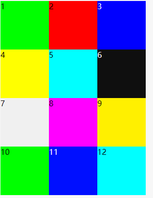
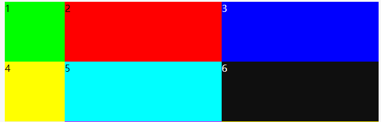
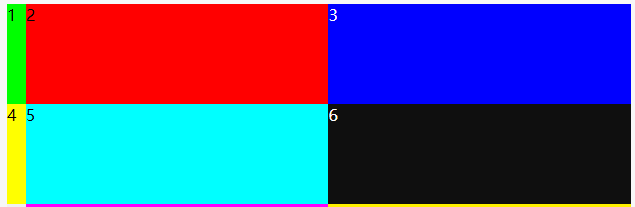
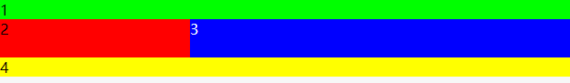
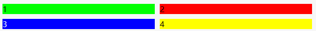
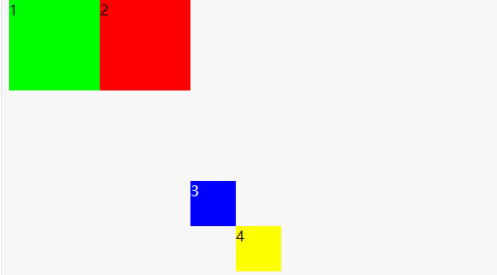
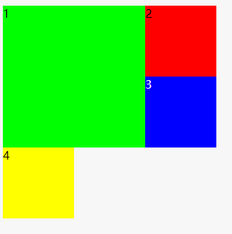

简介
CSS 网格布局擅长于将一个页面划分为几个主要区域，以及定义这些区域的大小、位置、层次等关系（前提是 HTML 生成了这些区域）。
Flex 布局是轴线布局，只能指定”项目”针对轴线的位置，可以看作是一维布局。
Grid 布局则是将容器划分成”行”和”列”，产生单元格，然后指定”项目所在”的单元格，可以看作是二维布局。Grid 布局远比 Flex 布局强大。
在 Grid 布局中，所有 css 属性分为两类，一类作用到 grid 容器上，还有一类作用在 grid 项目上。
如下表格所示：
| 作用在 grid 容器上 | 作用在 grid 子项上 |
|---|---|
| grid-template-columns grid-template-rows grid-template-areas grid-template grid-column-gap grid-row-gap grid-gap justify-items align-items place-items justify-content align-content place-content grid-auto-columns grid-auto-rows grid-auto-flow grid |
grid-column-start grid-column-end grid-row-start grid-row-end grid-column grid-row grid-area justify-self align-self place-self |
作用在 grid 容器上的 CSS 属性
基础代码为：
1 | <!DOCTYPE html> |
grid-template-columns 和 grid-template-rows
容器指定了网格布局以后，接着就要划分行和列。grid-template-columns 属性定义每一列的列宽，grid-template-rows 属性定义每一行的行高。
1 | .container { |
上面的代码会指定一个 3 列 4 行的网格，列宽和行高都是 100px;

值
- 可以为
px或者百分比（%） autorepeat( [ <positive-integer> | auto-fill | auto-fit ] , <track-list> )fr(fraction)是单词fraction的缩写，表示分数max-content、min-content、minmax(min, max)
px 和百分比我们就不介绍了。
auto
有时，单元格的大小是固定的，但是容器的大小不确定。如果希望每一行（或每一列）容纳尽可能多的单元格，这时可以使用 auto-fill 关键字表示自动填充。
1 | .container { |
我们把第一列设置为 auto，效果如下：
repeat()
表示网格轨道的重复部分，以一种更简洁的方式去表示大量而且重复列的表达式。函数接收两个参数，第一个参数是重复的次数，第二个参数是所要重复的值。在第一个基础上改写代码如下：
1 | .container { |
这个效果和直接写三个 100px 的效果是一样的。
fr
fr是单词 fraction 的缩写，表示分数。
- 先从简单例子看起：
1 | .container { |
1:1:1，网格宽度三等分，实时效果如下：
- 如果有固定尺寸值，则划分剩余空间大小，例如：
1 | .container { |

后面两列是 grid 容器宽度减去 100 像素后的 1/2。
- 如果和
auto混用会如何呢
1 | .container { |
auto 在和 px、百分比一起用的时候是撑满剩下的空间。但是和 fr 一起用的时候为内容宽度。
grid-template-areas
grid-template-areas 属性是 grid areas 在 CSS 中的特定命名。
语法
值none
网格容器没有定义任何的网格区块(grid areas)。<string>+
每一个给定的字符串会生成一行，一个字符串中用空格分隔的每一个单元(cell)会生成一列。多个同名的，跨越相邻行或列的单元称为网格区块(grid area)。非矩形的网格区块是无效的。
代码如下：
1 | <div style="background: #00ff00"> |
1 | .container { |
我们的网格区域一定要形成规整的矩形区域，什么 L 形，凹的或凸的形状都是不支持的，会认为是无效的属性值。

grid-template
grid-template 是一个简写的 CSS 属性，用于定义 grid columns, rows 和 areas。
语法如下：
1 | grid-template: <grid-template-rows> / <grid-template-columns>; |
用 grid-template 实现上面的效果，代码如下：
1 | .container { |
它实现的效果和上面的一样。
由于
grid-template不会重置一些隐式的 grid 属性（如grid-auto-columns，grid-auto-rows和grid-auto-flow），因此，大多数时候，还是推荐使用 grid 代替 grid-template。
grid-column-gap 和 grid-row-gap、grid-gap
grid-column-gap 和 grid-row-gap 属性用来定义网格中网格间隙的尺寸。你可以理解成田地之间走路的田垄宽度。
语法如下：
1 | grid-column-gap: 10px; // 水平间隔 10px |
代码如下：
1 | .container { |

grid-gap
CSS grid-gap 属性是 grid-column-gap 和 grid-row-gap 属性的缩写。语法如下：
1 | grid-gap: <grid-row-gap> <grid-column-gap>; |
实现和上面一样的布局代码如下：
1 | grid-template-columns: 1fr 1fr; |
justify-items、align-items、palce-items
justify-items 属性设置单元格内容的水平位置（左中右），align-items 属性设置单元格内容的垂直位置（上中下）。
语法如下
1 | justify-items: start | end | center | stretch; |
start：对齐单元格的起始边缘。end：对齐单元格的结束边缘。center：单元格内部居中。stretch：拉伸，占满单元格的整个宽度（默认值）。
justify-items 效果参考 张鑫旭大佬的博客
align-items 效果参考 张鑫旭大佬的博客
palce-items
place-items 属性是 align-items 属性和 justify-items 属性的合并简写形式。
语法
1 | place-items: <align-items> <justify-items>; |
如果省略第二个值，则浏览器认为与第一个值相等。
justify-content、align-content、place-content
justify-content 属性是整个内容区域在容器里面的水平位置（左中右），align-content 属性是整个内容区域的垂直位置（上中下）。
justify-content 指定了网格元素的水平分布方式。此属性仅在网格总宽度小于 grid 容器宽度时候有效果。
语法如下：
1 | justify-content: start | end | center | stretch | space-around | space-between | |
- start - 对齐容器的起始边框。
- end - 对齐容器的结束边框。
- center - 容器内部居中。
- stretch - 项目大小没有指定时，拉伸占据整个网格容器。
- space-around - 每个项目两侧的间隔相等。所以，项目之间的间隔比项目与容器边框的间隔大一倍。
- space-between - 项目与项目的间隔相等，项目与容器边框之间没有间隔。
- space-evenly - 项目与项目的间隔相等，项目与容器边框之间也是同样长度的间隔。
正式效果参考如下：
justify-content 效果参考 张鑫旭大佬的博客
align-content 效果参考 张鑫旭大佬的博客
place-content
place-content 属性是 align-content 属性和 justify-content 属性的合并简写形式。
1 | place-content: <align-content> <justify-content>; |
如果省略第二个值，浏览器就会假定第二个值等于第一个值。
grid-auto-columns、grid-auto-rows
指定任何自动生成的网格轨道（也称为隐式网格轨道）的大小。 当网格项目多于网格中的单元格或网格项目放置在显式网格之外时，将创建隐式轨道。
语法
1 | grid-auto-columns: <track-size> ...; |
grid-auto-columns属性和grid-auto-rows属性用来设置，浏览器自动创建的多余网格的列宽和行高。它们的写法与grid-template-columns和grid-template-rows完全相同。如果不指定这两个属性，浏览器完全根据单元格内容的大小，决定新增网格的列宽和行高。
示例如划分好的网格是 2 行 x 2 列，但是，3 号项目指定在第 3 行，4 号项目指定在第 4 行。
代码如下：
1 | .container { |

grid-auto-flow
grid-auto-flow 属性控制没有明确指定位置的 grid 子项的放置方式。比方说定义了一个 5*2 的 10 格子，共有 5 个元素，其中 2 个元素指定了放在哪个格子里，还有 3 个则自生自灭排列。此时，这 3 个元素如何排列就是由 grid-auto-flow 属性控制的。
语法
1 | grid-auto-flow: row | column | row dense | column dense; |
- row 默认值。没有指定位置的网格依次水平排列优先。
- column 没有指定位置的网格依次垂直排列优先。
- dense dense 这个英文是稠密的意思。如果有设置，则表示自动排列启用“密集”打包算法。如果稍后出现的网格比较小，则尝试看看前面有没有合适的地方放置，使网格尽可能稠密紧凑。此属性值仅仅改变视觉顺序，会导致 DOM 属性和实际呈现顺序不符合，这对于可访问性是不友好的，建议谨慎使用。
示例请看grid-auto-flow 效果参考 张鑫旭大佬的博客
grid
是下面所有这些 CSS 属性的缩写集合，grid-template-rows，grid-template-columns，grid-template-areas，grid-auto-rows，grid-auto-columns 和 grid-auto-flow。
语法：
1 | grid: none; |
none表示设置所有的子属性为初始值。
1 | grid: <grid-template>; |
和 grid-template 用法一致
1 | grid: <grid-template-rows> / [ auto-flow && dense? ] <grid-auto-columns>?; |
上面就是 grid 容器上的属性，属性很多不好记，要多练习几遍才能熟练使用。
作用在 grid 子项上的 CSS 属性
grid-column-start, grid-column-end, grid-row-start 和 grid-row-endgrid-column 和 grid-rowgrid-areajustify-self、align-self、place-self
grid-column-start, grid-column-end, grid-row-start 和 grid-row-end
表示 grid 子项所占据的区域的起始和终止位置，包括水平方向和垂直方向。
语法
1 | grid-column-start: <number> | <name> | span <number> | span <name> | auto |
语法中的管道分隔符|表示“或者”的意思，所以别看上面好长，实际上就一个属性值，具体来讲：
<number>: 起止与第几条网格线。<name>: 自定义的网格线的名称。span <number>: 表示当前网格会自动跨越指定的网格数量。span <name>: 表示当前网格会自动扩展，直到命中指定的网格线名称。auto: 全自动，包括定位，跨度等。
普通数字
1 | .container { |

网格线的名字
1 | .container { |
与上面结果相同
span 关键字
1 | .container { |
grid-column 和 grid-row
grid-column属性是grid-column-start和grid-column-end的合并简写形式，grid-row属性是grid-row-start属性和grid-row-end的合并简写形式。
语法
1 | grid-column: <start-line> / <end-line> | <start-line> / span <value>; |
改写上面的代码：
1 | .container div:nth-child(1) { |
与上面的实现一样。
grid-area
grid-area表示当前网格所占用的区域。在介绍grid-template-areas属性的时候就演示过该属性，我们使用grid-template-areas属性自定义一些网格区域，然后使用grid-area属性让 grid 子项指定使用这些区域，就自动进行了区域分布。grid-area和grid-column/grid-row作用都是 grid 子项的分布，但grid-area语义要更好，识别度更佳，非常适合具有功能属性的布局区域（如头部，底部），同时，还支持非规则区域。
语法
1 | grid-area: <name> | <row-start> / <column-start> / <row-end> / <column-end>; |
区域名称。由 grid-template-areas 属性创建。 <row-start> / <column-start> / <row-end> / <column-end>占据网格区域的纵横起始位置。
改写上面代码：
1 | .container div:nth-child(1) { |
justify-self、align-self、place-self
justify-self属性设置单元格内容的水平位置（左中右），跟justify-items属性的用法完全一致，但只作用于单个项目。align-self属性设置单元格内容的垂直位置（上中下），跟align-items属性的用法完全一致，也是只作用于单个项目。
语法
1 | justify-self: start | end | center | stretch; |
- start：对齐单元格的起始边缘。
- end：对齐单元格的结束边缘。
- center：单元格内部居中。
- stretch：拉伸，占满单元格的整个宽度（默认值）。
示例代码请看
justify-self 效果参考 张鑫旭大佬的博客
align-self 效果参考 张鑫旭大佬的博客
place-self
place-items 可以让 align-self 和 justify-self 属性写在单个声明中。
1 | place-self: <align-self> / <justify-self>; |
总结
Grid 布局则适用于更大规模的布局（二维布局），而 Flexbox 布局最适合应用程序的组件和小规模布局（一维布局）命名虽然支持中文，但由于 CSS 文件中文存在乱码的风险在 Grid 布局中，float，display:inline-block，display:table-cell，vertical-align 以及 column-\*这些属性和声明对 grid 子项是没有任何作用的。这个可以说是 Grid 布局中的常识，面试经常会问的，一定要记得。IE10-IE15 虽然名义上支持 Grid 布局，但支持的是老版本语法（本文是介绍的全是 2.0 全新语法），
兼容性查询请看can i use